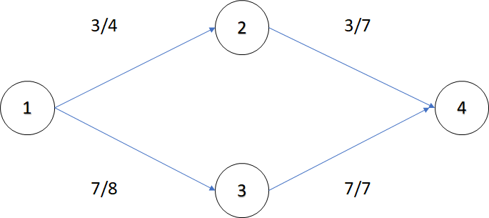
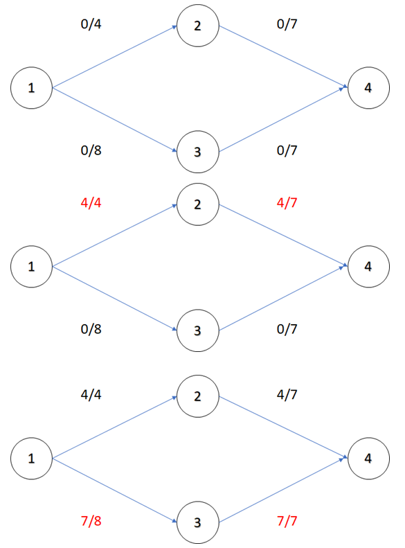
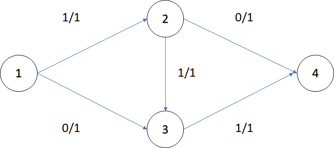
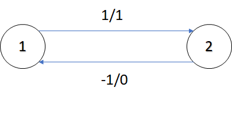
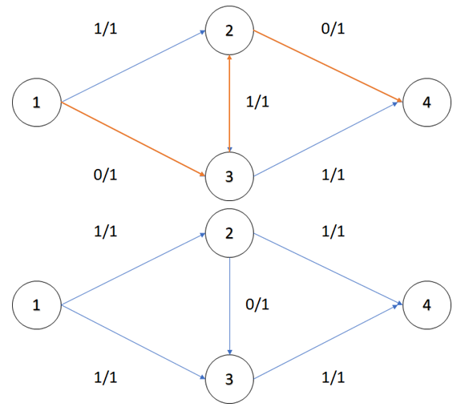
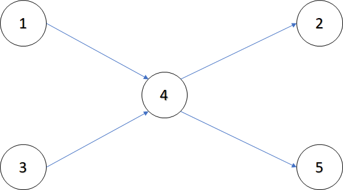
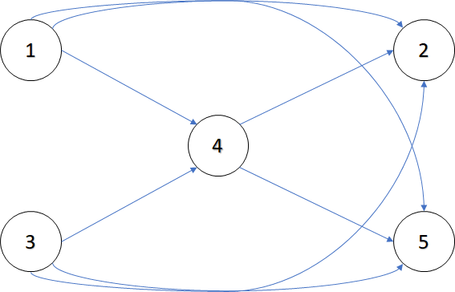
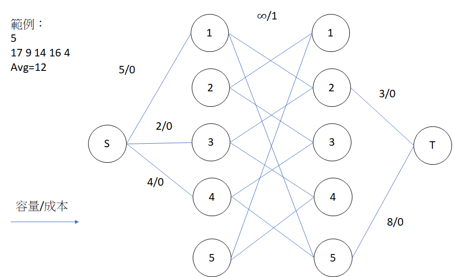
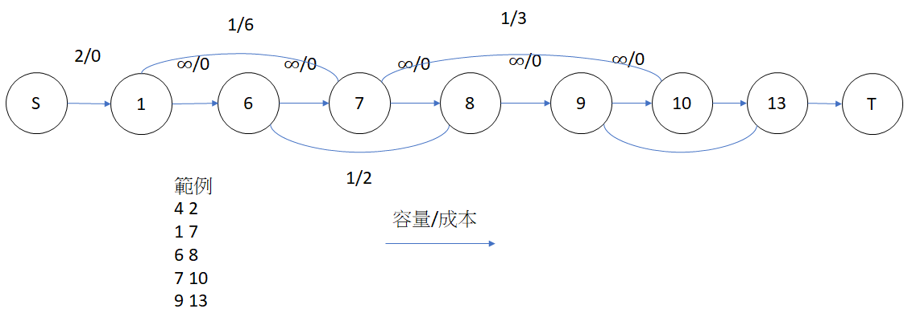

網路流
性質和例子
網路流的性質：有起點和終點，有流量限制。
例子：水流、網速、高速公路。
定義
給定一張圖 ，每條邊 有容量\ 和流量 ，剩餘流量 。
給定 和匯點 ，我們稱網路流為「 網路流」， 網路流的流量 源點 流出的流量和， 流進匯點 的流量和。
可行流
給定一個 網路流，如果符合以下條件，稱為「 可行流」，也就是合法的 網路流
- 流量限制：
- 流量對稱：
- 流量守衡
- 非源點 和匯點 ，流入的流量和等於流出的流量和 流入的流量和等於流出的流量和
- 源點 流出的流量和等於流進匯點 的流量和

最大流演算法
如上文所述，一個 可行流( 網路流)的流量 源點 流出的流量和， 流進匯點 的流量和。在現實例子中，我們希望 越大越好。
基本想法：重複尋找從 到 的路徑，計算這條路徑最大流量 ，，並將這條路徑所有邊扣除 ，無法找到一條路徑使 增加就停止。

但這樣的演算法不一定能找到最大流量，如下圖的最大流量是 ，但只找到 單位的流量。

為了解決這個問題，我們讓流量可以逆行，根據流量限制和流量對稱，一條邊 ，反向邊 的容量 ，流量 ，所有剩餘流量 的邊形成的圖稱為剩餘網路 。

藉由逆行的機制，選擇路徑 ，可以再找到 單位的流量。

增廣路徑 (Augmenting Path)
- 假設 是可行流， 是 的剩餘網路
- 是 在一條從 到 的路徑，稱為擴充路徑。
- 一條邊 增加流量 ，代表
增廣路徑
假設 是可行流中的剩餘網路， 是 在一條從 到 的路徑，且每一條邊的剩餘流量 ，稱為擴充路徑。
令 為擴充路徑的瓶頸流量，也就是為可行流再找到 的流量。假設 為 上往匯點 的邊。
- 所有前往匯點的邊流量加上 :
- 所有離開匯點的邊流量扣除 :
藉由加入反向邊機制和定義增廣路徑，找最大流的演算法雛形誕生：在剩餘網路上找到增廣路徑來擴充流量，直到剩餘網路沒有從 的路徑，即獲得最大流。
根據增廣路徑的找法，下列簡述三個演算法：
- Ford-fulkerson：利用 DFS 枚舉增廣路徑，如果流量為實數域無法保證程式會結束，流量為整數域時間複雜度為 。
- Edmonds-karp：利用最短路枚舉增廣路徑，時間複雜度
- Dinic：先做 BFS 將點分層(有向無環圖)，再用 DFS 遍歷搜尋增廣路徑，一次找到多條增廣路徑，時間複雜度為 。
Dinic 演算法實作
1 2 3 4 5 6 7 8 9 10 11 12 13 14 15 16 17 18 19 20 21 22 23 24 25 26 27 28 29 30 31 32 33 34 35 36 37 38 39 40 41 42 43 44 45 46 47 48 49 50 51 52 53 54 55 56 57 58 59 60 61 62 63 64 65 66 67 68 69 70 71 72 73 74 75 76 77 78 79 80 81 82 83 84 85 86 87 88 89 90 | |
變數解釋
- ：點的個數，源點、匯點。
- ：BFS 裡用來表示這次點 是第幾層。
- ：DFS 裡用來表示這次點 是第幾層。
- ：有向邊，存放終點、剩餘流量，反向邊的編號。反向邊的編號用在 DFS 更新反向邊的剩餘流量。
新增邊
- 無向邊：拆成兩條方向相反，剩餘流量相同的有向邊。
- 有向邊：增加正向邊和反向邊。
BFS
- 設源點 為第 層。
- 將所有和 相連且剩餘流量 的點設為第 層。
- 將所有和第 層的點相連且剩餘流量 的點設為第 層。
- 以此類推，已經標記的點不會再標記第 次。
- 如果匯點 沒有被標記，代表已經找到最大流了。
DFS
- 依據 BFS 的分層標記，遍歷完所有滿足 第 層的點 第 層的點 的路徑。
- 在往下遞迴時計算瓶頸流量，往上時更新相關邊的剩餘流量。
二分圖最大匹配
設二分圖兩個集合為 ， 集合的所有點和源點連接一條剩餘流量無限大的邊， 集合的所有點和匯點連接一條剩餘流量無限大的邊，二分圖原本的邊剩餘流量設為 ，最大流即為二分圖最大匹配。
DAG 的最小路徑覆蓋
DAG 的最小路徑覆蓋
給你一張 DAG，請問問最少要幾條路徑才能覆蓋所有點。
分成不相交路徑和相交路徑。
不相交路徑： ，共 條。
相交路徑： ，共 條。

不相交路徑：將一個點拆成兩個點，分別代表指向別人的點和被別人指向的點。
一開始每個點都是獨立的路徑，總共有 條，在二分圖上找到一條匹配邊，就等於把兩條路徑變成一條，路徑數 。答案為 最大匹配數。
相交路徑版本：先做一次 Floyd-warshall，如果 可以藉由其他點抵達 ，建一條 的邊。題目變成頂點不相交的最小路徑覆蓋。
以下圖為例，如果選定了 作為第一條路徑， 可以在不經過 的情況下連到 。

最小(大)花費最大流
最小(大)花費最大流
每條邊除了流量以外還有單位價錢 。對於每條邊，如果流了 的流量就要付 的水道維護費，在最大流量的情況下，要讓花費最小(大)。
演算法和 Dinic 相似，改用最短路徑演算法找尋增廣路徑，因為要處裡負邊 (反向邊)，要使用 SPFA。如果要計算最大花費，在一開始把花費乘以 ，算出結果後再乘以 。
1 2 3 4 5 6 7 8 9 10 11 12 13 14 15 16 17 18 19 20 21 22 23 24 25 26 27 28 29 30 31 32 33 34 35 36 37 38 39 40 41 42 43 44 45 46 47 48 49 50 51 52 53 54 55 56 57 58 59 60 61 62 63 64 65 66 67 68 69 70 71 72 73 74 75 76 77 78 79 80 81 82 83 84 85 86 87 88 89 90 91 92 93 94 95 96 | |
變數解釋
- ：有向邊，存放每條邊的兩端點、費用和剩餘流量。
- ：點的個數
- ：SPFA 中，紀錄 是被哪個點鬆弛，也可以說是在最短路徑中， 的父節點。
- ：SPFA 中，紀錄從源點 流一單位到 的最小(大)成本。
- ：用於 SPFA。
- ：紀錄最大流和最小(大)成本。
新增邊
- 和 Dinic 新增反向邊的想法類似，差別在於反向邊的成本是原本的成本乘以 。
SPFA
- 根據成本和流量鬆弛。
- 如果匯點 的最小成本 ，代表已經找到最小(大)花費最大流。
update
- 根據 ，可以找到一條從匯點 到源點 的路徑，利用遞迴找到瓶頸流量，再更新最大流和最小(大)花費。
相關題目
LibreOJ 6013
有 個環形倉庫，每個倉庫物品數量不等，貨物只能往相鄰的倉庫移動，問最少要搬運多少貨品讓每個倉庫物品數量相同?
算出 間倉庫的平均貨物數 。
對於第 間倉庫貨物數 ，如果 ，建一條從 到 的容量 花費為 的邊，如果 ，建一條從 到 的容量 花費為 的邊。
為了防止從 容出的容量直接跑到 ，將所有點拆成兩個點 ，對於所有的 ，分別和 建立一條容量無限花費為 的邊。
最大花費即為答案。

LibreOJ 6014
給定 個區間 ，選定一些區間，如果集合內包含點 的區間不超過 個，稱為合法集合，問合法集合的最長長度和為多少。
因為 的範圍過大，須將 離散化，另外要去除重複元素，得到時間段 。
建立一條源點 到 容量為 花費為 的邊，建立一條 到匯點 容量為 花費為 的邊，相鄰兩個時間段建立一條容量無限花費為 的邊。
對於每個區間 ，建立一條從 到 容量為 花費為 的邊。
最大花費即為答案。

例題練習
- DAG 的最小路徑覆蓋
- POJ 1422
- POJ 2594
- LibreOJ 6002
- LibreOJ 6003